開卷有益 ／
分科測驗 ／ 地理 ／ 111 年111 年分科測驗地理試題與答案
這一頁是民國 111 年分科測驗地理的整份歷屆試題，共 44 題，題目與標準答案出自大考中心 分科測驗歷年試題（依著作權法 §9，考試試題不受著作權保護），其中 44 題附有詳解。以下逐題列出題幹、選項與答案；要計時作答或記錄成績，請用線上練習。
大學入學考試中心原始場次代碼：分科地理
線上作答這一科 →
全部 44 題
第 1 題
大航海時代的三角貿易中,奴隸勞動人口的主要移動最可能仰賴下列哪條洋流?
（A） 西風漂流（B） 北赤道洋流（C） 加那利涼流（D） 北大西洋暖流答案：（B）
詳解與考點 正解：題幹的「奴隸勞動人口」指三角貿易中由西非送往加勒比海與美洲的跨大西洋航段。北赤道洋流由非洲西岸大致向西流，順流可抵達加勒比海一帶，與這條主要人口移動方向相符；（B）北赤道洋流最合適，故選 B。
A：西風漂流位於南半球高緯海域，主要向東流動，航向與由西非前往美洲的奴隸貿易主幹航線不符。
C：加那利涼流沿西北非洲海岸向南流，雖有助船隻進入熱帶海域，卻不是橫渡大西洋、把人口由非洲送往美洲的主要順流。分辨關鍵在是否直接提供向西的跨洋航行條件。
D：北大西洋暖流的流向大致由北美朝東北方前往歐洲，較能聯繫美洲與歐洲，並非非洲西岸至美洲的航段。
本題考點：洋流與航路（ocean currents and sea routes）——先比對出發地、目的地與洋流方向，三者一致才可能是主要航線；三角貿易（triangular trade）——判斷奴隸航段時，鎖定由非洲西向美洲的跨大西洋移動。
第 2 題
黃荊全株可入藥,果實在中藥名為「牡荊子」,煎服可治感冒,是原住民族與漢人常用
的保健植物資源。原住民在山林中採集此植物時,發揮其傳統生態知識,較植物專家效
率高,主要是其具有下列何種傳統生態知識?
（A） 熟悉黃荊的生物分類（B） 熟悉黃荊的外觀特徵（C） 熟悉黃荊的藥用療效（D） 熟悉黃荊的在地棲地答案：（D）
詳解與考點 正解：在山林中採集植物的效率，取決於能否知道植物會在何種地方出現、何時容易找到。原住民族對在地環境長期累積的觀察，可使（D）熟悉黃荊的在地棲地成為最直接的採集優勢，故選 D。
A：生物分類是依學名與分類系統辨識生物的知識，並不直接告訴採集者山林中的實際生長位置。
B：外觀特徵有助確認眼前植物是否為黃荊，但只能完成辨識，不能有效縮小尋找植物的空間範圍。
C：藥用療效說明植物的用途，無法回答到何處、在何種環境最容易找到它。
本題考點：傳統生態知識（traditional ecological knowledge）——判斷其實用價值時，連結在地族群長期觀察到的棲地、季節與資源分布；物種辨識與棲地知識——知道「是什麼」不等於知道「在哪裡找」，採集效率特別依賴後者。
第 3 題
清代方志對臺灣某地常見的聚落和屋舍建材形容如下:「其屋宇俱結於山凹之內、水隈
之處,...。牆壁俱用老古石所砌,其石乃海中鹹氣所結,取去之時石猶鬆脆;迨風雨漂
淋,去盡鹹氣,即成堅實。價廉而取便。...之房屋,悉皆用此。其屋亦高不過一丈一、
二尺之外者;非為省工價,為因海風猛烈,不敢高大,以防飄刮故耳。」該地最可能位
於何處?
（A） 宜蘭蘇澳（B） 新北金山（C） 臺南北門（D） 澎湖西嶼答案：（D）
詳解與考點 正解：史料同時指出屋舍用海中鹹氣形成、經風雨後變堅實的老古石，並為抵抗猛烈海風而把屋頂築低。這組石材與強風的線索符合澎湖群島的珊瑚礁石灰岩建材與海島風勢；（D）澎湖西嶼最可能是該地，故選 D。
A：宜蘭蘇澳雖臨海且多山凹水隈，但題幹的老古石建材與為防強烈海風而形成的低矮屋舍組合，並非其最具辨識力的地方特徵。
B：新北金山同樣可能受東北季風影響，但僅有濱海與強風不足以辨識，仍缺少題幹所示就地取用老古石的關鍵線索。
C：臺南北門有濱海與鹽分環境，卻不能同時充分解釋大量使用老古石及屋舍特別低矮以抗海風的描述。
本題考點：地理材料判讀（geographical source interpretation）——地名題要把建材、地形與氣候線索交叉比對，不用單一的「臨海」條件判斷；聚落適應（settlement adaptation）——建材與屋舍高度若直接回應當地資源和風勢，便是人類適應自然環境的證據。
第 4 題
全球氣候變遷對人類食物來源產生巨大的影響,例如日本北海道海域的主要漁獲是鮭
魚等冷水魚類,但近年因氣候變遷導致漁獲量大減,而原本棲息在日本本州海域的黑鮪
魚卻大量出現於北海道海域,造成此現象最可能的原因為何?
（A） 海水暖化（B） 海平面上升（C） 海岸暴潮頻率增加（D） 海水中二氧化碳濃度增加答案：（A）
詳解與考點 正解：冷水魚類在北海道海域減少，而原本棲息較南方本州海域的黑鮪魚大量北移，兩種變化都指向適合較暖水溫的生物分布範圍向北擴展。（A）海水暖化最能直接造成這種棲地條件改變，故選 A。
B：海平面上升主要改變海岸淹沒與低窪地風險，不能直接解釋冷、暖水魚類的分布帶互換。
C：海岸暴潮頻率增加是沿岸災害風險的變化，通常具有事件性，並非改變魚類長期適生水溫的主要原因。
D：海水中二氧化碳濃度增加會導致海洋酸化，較直接影響對酸鹼度敏感的生物與海洋化學；題幹的核心線索是不同水溫魚種的南北移動。
本題考點：海水暖化（ocean warming）——看到冷水種減少、暖水種向高緯擴張時，優先以海水溫度上升解釋；物種分布（species distribution）——判讀生物遷移時，先把物種的適生環境條件與空間移動方向連結。
第 5 題
圖1 為某國的人口出生數變化圖,雖然整體趨勢呈現下降,但受到該國傳統文化觀念影
響,逢特定年分人口出生數呈現反轉增 (萬人)
50
加的現象,由此現象推斷該國最可能位
40
於哪個文化圈?
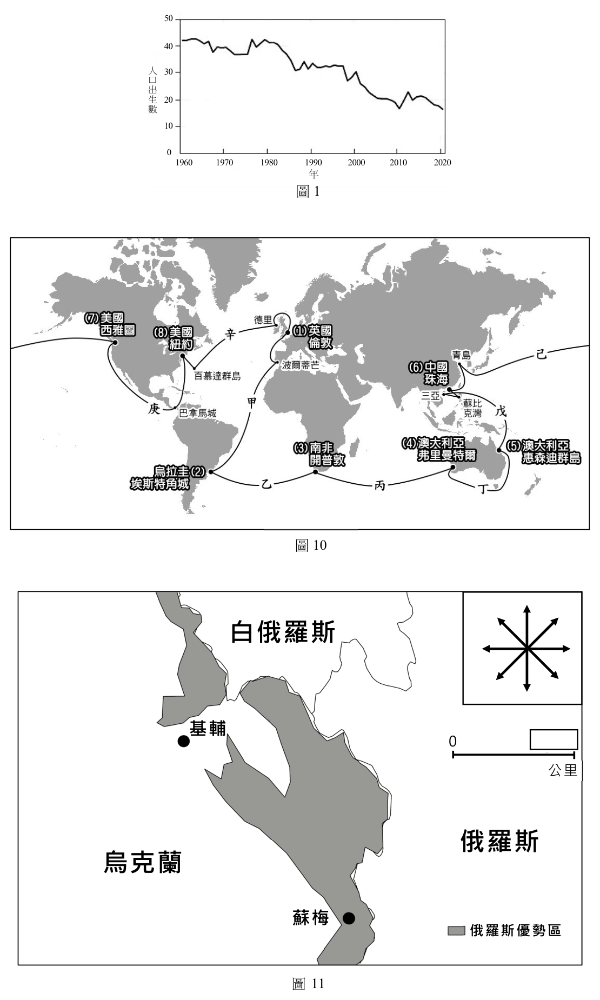
（A） 西方文化圈 人 30
口（B） 東亞文化圈 出生 20（C） 伊斯蘭文化圈 數 10（D） 南亞、東南亞文化圈 0
1960 1970 1980 1990 2000 2010 2020
年
圖1答案：（B）
詳解與考點 正解：題幹說整體出生數下降，卻在特定年份因傳統文化觀念而反轉增加，最能連結到十二生肖與偏好特定生肖年的生育現象。這是漢字文化傳統中常見的社會現象，故該國最可能位於東亞文化圈，故選 B。
A：西方文化圈雖有宗教與節慶影響生育選擇，但沒有以十二生肖年造成規律性出生高峰的普遍文化線索。
C：伊斯蘭文化圈的曆法與宗教節期重要，但題幹的「特定年分」不能由此直接連到生肖年。
D：南亞、東南亞文化圈內族群與宗教多元，不能僅憑出生數反轉就判作該區共同的生肖文化現象。
本題考點：文化擴散（cultural diffusion）——生肖等文化符號可跨地區流傳，但集中性最能協助判定文化圈；人口出生數（birth count）——長期趨勢外的規律波動要結合社會文化因素解釋；東亞文化圈（East Asian cultural realm）——漢字、儒家與生肖等傳統可作為辨識線索。
第 6 題
在冬季至春季之間,中國西北與蒙古一帶,時常有大量細顆粒的揚塵被帶至高空,受西
風氣流向東傳,引發東亞等國的空氣汙染,稱之為沙塵暴。若某生想要研究生成沙塵暴
來源地的環境特徵,最適合使用下列哪些圖資?
甲、衛星影像 乙、工廠分布圖
丙、土地利用圖 丁、數值地形模型
（A） 甲丙（B） 甲丁（C） 乙丙（D） 乙丁答案：（A）
詳解與考點 正解：關鍵在「生成沙塵暴來源地的環境特徵」：須同時辨識揚塵發生的空間範圍，以及地表是否裸露、乾燥或受何種利用。甲衛星影像可判讀揚塵帶的起源與移動，丙土地利用圖可辨識沙漠、裸露地或耕地等地表覆蓋，兩者能相互定位來源地的環境條件，故選 A。
B：甲、丁雖可同時看到揚塵與地勢起伏，但丁數值地形模型主要呈現高程與坡度，無法直接判定地表覆蓋與人地利用狀態，少了辨識揚塵物質來源的重要資訊。
C：乙工廠分布圖適合分析工業點源污染，沙塵暴則以風蝕揚起的細顆粒為主；只有乙、丙不能掌握揚塵帶實際從何處開始與如何移動。
D：乙、丁分別是工業設施與地形資料，兩者都不能直接顯示地表揚塵的時空分布。分辨關鍵在自然揚塵來源需先看地表覆蓋與衛星觀測，不是工廠位置。
本題考點：遙測（remote sensing）——要追蹤大範圍、隨時間移動的環境現象時，先用衛星影像辨識其位置與變化；土地利用（land use）——要解釋地表為何容易成為揚塵來源時，判讀裸露地、沙漠與耕地等覆蓋類型；圖資選擇——依研究問題配對資料，問「從哪裡揚起」要兼顧現象分布與地表條件。
第 7 題
有報導指出:「核能發電的成本較低,且排碳量低,被視為乾淨且有效率的能源,但也
存在一些限制。」政府在2014 年宣布封存核四,2021 年民眾也否決重啟核四的公投提
案。若從臺灣自然環境特性的觀點,下列哪項是臺灣發展核能發電最主要的限制因素?
（A） 位於板塊交界帶（B） 位於季風氣候區（C） 位於候鳥遷徙要道（D） 位於黑潮流經路線答案：（A）
詳解與考點 正解：本題問的是臺灣自然環境中最直接影響核能設施安全的限制。位於板塊交界帶意味著地震與相關地質災害風險較高；核電設施必須長期評估強震、斷層活動與可能伴隨的海嘯等複合風險，因此這是發展核能最主要的自然環境限制，故選 A。
B：季風會帶來季節性的降雨、風向與海象變化，會影響設施設計與營運條件，但不如地震與地質災害直接牽動重大事故風險。
C：候鳥遷徙要道涉及生態保育與環境影響評估，屬選址時應考量的事項；它不是核能安全最核心的自然災害限制。
D：黑潮流經路線會影響沿岸海水環境與污染擴散評估，但海流本身不能取代對地震、斷層與海嘯風險的優先判斷。
本題考點：板塊交界（plate boundary）——評估重大設施選址時，先檢視地震、火山與斷層等構造性風險；核能風險（nuclear safety risk）——比較限制因素時，區分會影響環境評估的條件與會直接影響重大事故防護的條件；複合災害（compound hazard）——沿海地區的地震風險常須連同海嘯與基礎設施受損一起判讀。
第 8 題
布蘭登線(或稱布朗特界線)以區域經濟發展的差異,將世界劃分為南、北方區域,表1
為甲~戊五個國家的商品出口資料,下列哪些最可能是南方區域的國家?
表1
國家 前五大商品出口值占該國出口值百分比(%)
甲 機電29.0 運輸20.0 化學12.8 金屬7.1 橡膠5.2
乙 礦產29.0 燃料18.9 動物 5.9 金屬3.9 植物3.1
丙 食物74.7 植物13.0 運輸 5.7 木材2.0 金屬1.0
丁 燃料92.4 運輸 3.2 礦石 2.8 機電0.4 木材0.3
戊 紡織57.2 獸皮 9.4 製鞋 8.9 機電4.6 植物3.7
（A） 甲乙丙（B） 甲丙丁（C） 乙丁戊（D） 丙丁戊答案：（D）
詳解與考點 正解：布蘭登線的南方區域多見初級產品或勞力密集產品比重高、產業升級較不足的出口結構。表中丙以食物、植物為主，丁以燃料為主，戊以紡織、獸皮與製鞋為主，最符合此特徵，所以南方區域為丙、丁、戊，故選 D。
A：甲的機電、運輸與化學產品比重高，較符合工業化程度高的北方區域，因此把甲列入即不成立。
B：B 同樣把甲列入，且漏掉出口結構明顯偏向勞力密集製造的戊，與判準不合。
C：乙雖有礦產與燃料出口，但資源型出口本身不足以判定為南方區域；此組合又遺漏以食物、植物為主的丙。
本題考點：布蘭登線（Brandt Line）——依經濟發展程度區分全球北方與南方，並非單純依南北緯度；出口結構（export composition）——初級產品與勞力密集品比重高，常反映產業附加價值較低；資源型經濟（resource-based economy）——有礦產或燃料出口不必然代表低發展，仍要看整體產業結構。
第 9 題
俄羅斯是OPEC 組織之外的石油及天然氣主要輸出國家,俄烏戰爭發生後許多國家對
俄羅斯實施經濟制裁,所導致的石油及天然氣缺額,可以轉向下列哪個非伊斯蘭國家的
OPEC 創始國採購?
（A） 印尼（B） 利比亞（C） 委內瑞拉（D） 阿爾及利亞答案：（C）
詳解與考點 正解：判準要同時滿足「OPEC 創始國」與「非伊斯蘭國家」兩個條件。委內瑞拉是 OPEC 的創始成員之一，國家宗教背景也不屬伊斯蘭國家；兩項條件缺一不可，故選 C。
A：印尼雖曾是 OPEC 成員，但不是創始國，且不能只因其產油國身分便視為符合題目的雙重條件。
B：利比亞是石油輸出國，也與 OPEC 有關，但它並非 OPEC 創始國，且屬伊斯蘭國家，兩項判準都不符。
D：阿爾及利亞同樣不是 OPEC 創始國，且屬伊斯蘭國家。這類選項看似符合「產油國」條件，錯在忽略題目限定的是創始國與宗教背景。
本題考點：OPEC（Organization of the Petroleum Exporting Countries）——遇到組織成員題，先分辨創始成員與後加入成員；複合條件篩選——題幹同時給地緣政治與文化條件時，必須逐項交集判斷，不能只符合其中一項。
第 10 題
自然災害是我們必須面對的挑戰,圖2 中的「子」和「丑」兩地,最可能受到下列哪些
相同自然災害的威脅?
子 丑
圖2
甲、野火 乙、颱風 丙、地震 丁、蝗災 戊、火山爆發
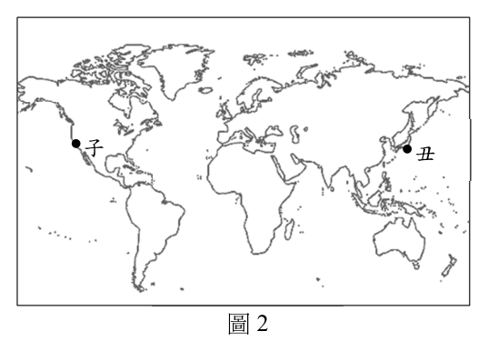
（A） 甲乙（B） 丙戊（C） 丁戊（D） 乙丁答案：（B）
詳解與考點 正解：本題要找的是由同一地殼活動機制造成的共同災害。（B）丙、戊分別為地震與火山爆發，兩者都與板塊交界附近的地殼運動、岩漿活動密切相關，因此子、丑可同受這組威脅，故選 B。
A：野火主要受乾濕季、植被與人為引火影響；颱風則由熱帶海洋與大氣環流形成，兩者不是同一類板塊活動災害。
C：蝗災受降雨、植被與蟲群繁殖條件影響，與火山活動的空間分布沒有固定的共同控制因素。
D：颱風與蝗災同屬氣候或生態條件影響較大的災害，不能由地殼活動帶的位置一併推出。
本題考點：板塊構造（plate tectonics）——看到地震與火山同時出現時，優先以板塊邊界判斷共同分布；自然災害分類（natural-hazard classification）——先分清地質、大氣、生物與人為災害，再比較其形成機制。
第 11 題
政府為提高都市內部土地的使用效率,提供合宜的居住環境,以及避免過度開發,最可
能透過下列哪種方式進行規範?
（A） 土地使用分區管制（B） 中心商業區的規劃（C） 各等級中地的設立（D） 邱念圈範圍的劃設答案：（A）
詳解與考點 正解：題幹同時要求提高土地使用效率、提供合宜居住環境並避免過度開發，必須有能對各地塊用途與開發強度施加限制的制度。（A）土地使用分區管制可依區域規定容許用途及開發條件，正能兼顧都市秩序與土地利用，故選 A。
B：中心商業區的規劃是安排商業活動集中的空間，僅處理一類都市機能，不能單靠它規範全都市的居住品質與開發強度。
C：各等級中地的設立偏向服務據點或空間層級的配置思考，並未直接規定各宗土地可作何種使用或可開發到何種程度。
D：劃設某一範圍只能界定空間邊界；若未連結用途與開發限制，仍無法達成避免過度開發的規範功能。
本題考點：土地使用分區管制（zoning）——看到「用途衝突、居住環境、過度開發」等條件時，判斷是否需要以分區規則限制土地用途與強度；都市土地利用（urban land use）——區位規劃與土地管制不同，前者安排機能，後者具有直接規範效果。
第 12 題
有學者指出:「清朝末年英國東印度公司透過武力向中國大量銷售印度生產的鴉片,賺
取大量貨幣。」下列哪個概念最能說明此貿易關係?
（A） 社會正義（B） 推拉理論（C） 擴散與模仿（D） 不平等交換答案：（D）
詳解與考點 正解：關鍵在鴉片由印度生產、以武力打入中國市場，而大量貨幣由中國流向英國；生產地、市場與獲利者之間的權力和利益明顯不對等。（D）不平等交換正用來說明強勢一方藉不對稱關係攫取較多利益的貿易，故選 D。
A：社會正義是評判分配是否公平的規範性理念，可以批判這段歷史，卻不是用來描述此貿易關係運作方式的概念。
B：推拉理論分析人口遷移的來源推力與目的地拉力，題幹談的是跨區域商品與利益的交換，不是人口遷移。
C：擴散與模仿著重技術、觀念或行為由一地傳至另一地，無法突顯武力支撐下的利益不對稱。
本題考點：不平等交換（unequal exchange）——看到強勢地區控制市場、資源或交易條件並取得不成比例利益時，從權力與價值流向判斷；貿易與人口遷移——商品交換問交換條件，推拉理論則用於分析人口移動。
第 13 題
某生擬以「某地農業與土地退化」作為探究與實作的議題,下列哪項研究流程最符合地
理學生態傳統觀點?
（A） 調查繪製土地退化的分布區域（B） 判釋衛星影像上的土地退化區域（C） 訪談農民於當地灌溉、施肥、除蟲等耕作方式（D） 蒐集人口、農產、雨量、氣溫等區域背景資料答案：（C）
詳解與考點 正解：將農業與土地退化放在一起，重點是找出當地人類耕作行為如何作用於環境。（C）訪談農民的灌溉、施肥與除蟲方式，能直接取得人地互動的資料，再據以分析這些做法與土地退化的關聯，最符合地理學生態傳統，故選 C。
A：繪製土地退化的分布區域有助呈現空間差異，但主要回答「在哪裡」，尚未直接探究農業行為與環境變遷的關係。
B：衛星影像判釋可辨識退化區域的空間現象，卻不能單獨說明灌溉、施肥或除蟲等人為因素如何造成退化。
D：人口、農產與氣候資料可交代區域背景，但若缺少實際耕作方式，難以建立人類活動與土地退化間的具體機制。
本題考點：人地關係（human-environment interaction）——研究環境問題時，先找出人類行為、環境條件與結果之間的作用鏈；地理學傳統——分布圖偏重空間格局，區域背景偏重地方描述，生態傳統則聚焦人與環境的交互影響。
第 14 題
新冠肺炎疫情在臺灣大流行後,為方便民眾購買快篩試劑,官方與民間合作推出快篩試
劑地圖查詢網站,可依使用者所在地,查詢附近一公里內的販售點,此查詢方式最可能
是利用下列哪項地理資訊系統功能?
（A） 地形分析（B） 視域分析（C） 環域分析（D） 內插分析/內插估計法答案：（C）
詳解與考點 正解：使用者所在地與「附近一公里內」兩個條件，表示系統要以位置為中心建立一定距離的範圍，再挑出範圍內的販售點。（C）環域分析可完成這種鄰近篩選，故選 C。
A：地形分析處理海拔、坡度與地勢等資料，與查找距離使用者一公里內的點位無關。
B：視域分析判斷從某一位置能否看見其他位置，受地形或建物遮蔽影響，並非距離範圍查詢。
D：內插分析依已知樣點推估未知地點的連續數值，例如雨量或溫度；販售點是既有的離散位置，不需要以內插估計。
本題考點：環域分析（buffer analysis）——題幹出現「某地點周圍 X 距離內」時，先建立環域再篩選圖徵；地理資訊系統（geographic information system, GIS）——判斷功能時區分距離查詢、可視性、地形與連續面推估各自處理的資料型態。
第 15 題
研究指出:「相鄰兩河川如有海拔高低差異,較低海拔的低位河因向源侵蝕或側蝕,蝕
穿分水嶺至較高海拔的高位河,將其河水引流過來,稱為搶水。高位河的下游因被搶
水,流量大減,呈現谷大水小的狀態,又稱為『斷頭河』。」圖3 為花蓮陶塞溪與其支
流的古代與現代的河流路徑圖,圖3 中哪處河段現代最可能因搶水作用而沖蝕力大減?
古代 現代
陶 陶
塞 塞
小 西
瓦 溪 西 小 溪 卡 黑 瓦 乙
爾 卡 黑 拉 拉 爾 • 溪 溪 甲 溪 罕 罕 溪 • •
丁
• 丙
河流 河流
流向 流向
圖3
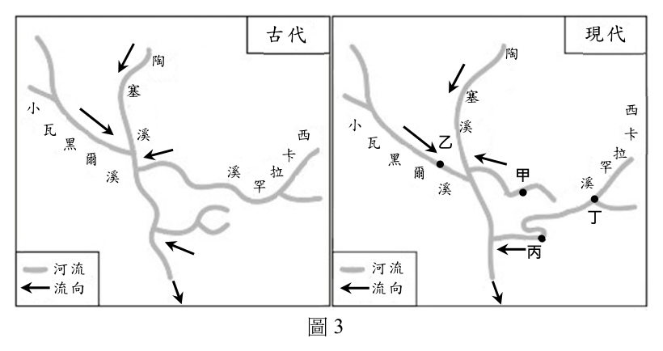
（A） 甲（B） 乙（C） 丙（D） 丁答案：（A）
詳解與考點 正解：判準是找高位河被奪走上游來水後的下游河段，而不是找侵蝕最強的搶水端。搶水使該段流量大減，形成谷大水小的斷頭河；題目所標示的（A）甲符合失去上游集水區後沖蝕力減弱的位置，故選 A。
B：低位河若承接被搶來的水，流量通常增加，向源侵蝕或搬運能力較可能增強，不是題幹所說的失水河段。
C：搶水點附近的河道轉折不等於斷頭河；要判為沖蝕力大減，必須確認其上游集水區已被截走。
D：未失去上游來水的河段即使位於同一河系，也不會僅因鄰近搶水作用而呈現谷大水小。
本題考點：河川搶水（stream piracy）——低位河侵蝕穿越分水嶺並截取高位河水源時，受水河增水、失水河減水；斷頭河（beheaded stream）——判斷重點是被截走水源後的高位河下游流量減少，而非搶水發生的接觸點。
第 16 題
某報導指出:「中東與北非因政治動盪引爆的難民危機在歐洲各地蔓延,許多難民前仆
後繼地跨越歐陸向英國邁進,除了英語是大家較熟悉的溝通語言外,英國的福利制度更
是吸引難民的主要原因,日前英國首相宣布一項難民轉送政策,欲將部分難民安置至非
洲的盧安達,隨即引來聯合國難民署抨擊,認為該政策嚴重違反國際法和難民法。」從
人口推拉理論分析,該報導中哪段敘述最可能符合中間障礙因素?
（A） 難民轉送政策（B） 英國的福利制度（C） 中東與北非政治動盪（D） 聯合國難民署抨擊答案：（A）
詳解與考點 正解：人口推拉理論中的中間障礙，是移動途中或進入目的地時出現的制度、距離與邊界等阻礙。英國的難民轉送政策會改變難民進入或安置於英國的條件，因此（A）難民轉送政策最符合中間障礙因素，故選 A。
B：英國的福利制度是目的地吸引人口前往的條件，屬拉力，不是阻擋移動的障礙。
C：中東與北非的政治動盪促使居民離開原居地，屬來源地的推力。
D：聯合國難民署的抨擊是對政策的評價與回應，題幹未將它描述為改變難民實際移動的條件。
本題考點：人口推拉理論（push-pull theory）——來源地的不利條件是推力，目的地的吸引條件是拉力，途中或入境限制則判為中間障礙；制度性障礙（institutional barriers）——政策、簽證與安置規則若限制目的地進入，應與推力、拉力分開辨識。
第 17 題
青青推著輪椅帶母親出門,常苦於尋找可用的廁所,因此架設一個電子地圖網路平台,
讓民眾一起在平台中標註可提供如廁服務的地點,並註明是否具備無障礙設施與衛生
評級。上述架設網路平台蒐集資料的作法,最符合下列哪個概念?
（A） 公民科學（B） 對抗性地圖（C） 自願性地理資訊（D） 公眾參與式地理資訊系統答案：（C）
詳解與考點 正解：題幹強調民眾自行在網路地圖上標註地點及無障礙、衛生等屬性，資料是由使用者自願貢獻的地理資訊。（C）自願性地理資訊最能描述這種群眾協作蒐集空間資料的作法，故選 C。
A：公民科學也可能由民眾協助蒐集資料，但通常以回答科學研究問題為目的；本題直接產出的是公共設施的地理點位與屬性資料。
B：對抗性地圖著重弱勢或民間以地圖挑戰既有權力敘事，題幹沒有呈現與官方地圖或主流論述相抗衡的目的。
D：公眾參與式地理資訊系統重點在公眾參與規畫與決策；本題的核心是開放民眾上傳地點資料，尚未涉及共同規畫或政策決定。
本題考點：自願性地理資訊（volunteered geographic information, VGI）——看到一般使用者主動標註位置與屬性資料時，判為自願提供地理資訊；公眾參與式地理資訊系統（public participation GIS, PPGIS）——若資料與圖資用於讓民眾參與規畫、協商或決策，才進一步判為 PPGIS。
◎ 1930-1940 年美國發生嚴重沙塵暴災害,起因是由於長期乾旱加上人為活動干擾,土壤 120°W 100°W 80°W 在年中有一段時期乾燥裸露,使得風暴來臨時捲 50°N 起大量沙塵,導致土地退化,糧食生產量大減,
讓該地上千人背井離鄉移居到西部其他州,穿梭
40°N 在各農場打零工,從事辛苦的勞力工作。《人鼠
之間》和《憤怒的葡萄》兩本著作,除表現出災
民的悲慘生活外,後者亦描繪移入地的農業型 30°N
態。圖4 為沙塵暴受災區分布圖。請問: 主要受災區範圍
圖4
第 18 題
下列哪項人為活動最可能是造成受災區土地退化的原因?
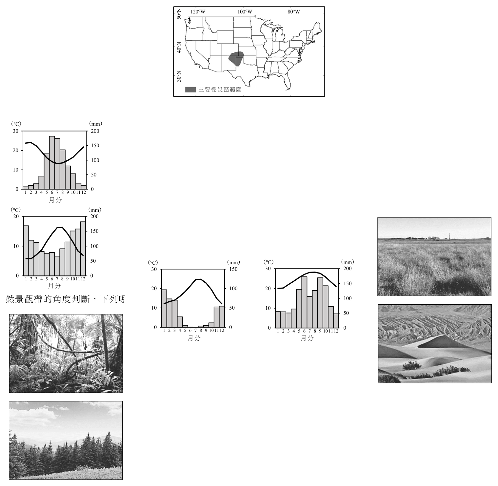
（A） 森林砍伐（B） 山牧季移（C） 深耕翻土（D） 刀耕火種答案：（C）
詳解與考點 正解：題幹的判準是長期乾旱下土壤裸露，風暴便能捲起大量表土；大平原的深耕翻土會破壞原有草根固持的表土，並在乾旱季留下鬆散、易受風蝕的土壤。這正能連結到沙塵暴與土地退化的機制，因此（C）深耕翻土最符合，故選 C。
A：森林砍伐確實可能增加侵蝕，但題幹描述的是以大規模耕作、乾燥裸露表土為核心的草原農業地景，不是森林開墾。
B：山牧季移是依季節移動牧群的放牧方式，未必造成大面積反覆翻動表土，和題幹的風蝕鏈結較弱。
D：刀耕火種常見於熱帶森林的輪耕情境；其地表覆蓋與農業背景不同於本題的大平原乾旱耕地。
本題考點：風蝕（wind erosion）——乾燥、裸露且鬆散的細土最易被強風吹走；土地退化（land degradation）——把自然乾旱與人為耕作方式連結，才能判斷災害不是單一自然因素造成；沙塵暴（dust storm）——植被根系被破壞後，表土固定力下降是重要條件。
第 19 題
題文中災民打零工所在州的主要氣候特徵,最接近下列哪種氣候類型?
（A） (°C) (mm)（B） (°C) (mm)
30 200 30 150
150
20 20 100
100
10 10 50
50
0 0 0 0 1 2 3 4 5 6 7 8 9 101112 1 2 3 4 5 6 7 8 9 101112
月分 月分（C） (°C) (mm)（D） (°C) (mm)
20 200 30 200
150 150
20
10 100 100
10
50 50
0 0 0 0 1 2 3 4 5 6 7 8 9 101112 1 2 3 4 5 6 7 8 9 101112
月分 月分答案：（B）
詳解與考點 正解：題文的災民移往美國西部農場，判斷要連結美國西部農業區的地中海型氣候：夏季受副熱帶高壓影響而乾燥，冬季由西風帶帶來降水。（B）對應夏乾冬雨的年內雨量分配，因此最符合，故選 B。
A：判斷氣候圖不能只比較全年雨量；未呈現夏季明顯乾燥、冬季較多雨的配雨型態，就不符合地中海型。
C：若降水集中於夏季或全年沒有乾季，較接近其他受季風或對流雨主導的氣候，與西部農業區的夏乾特徵不同。
D：溫度曲線即使有暖季，若雨量季節與冬雨夏乾相反，仍不能據此判作地中海型氣候。
本題考點：地中海型氣候（Mediterranean climate）——抓夏乾冬雨的降水季節性，不以單月高溫或年雨量總和單獨判斷；氣候圖判讀（climograph interpretation）——同時讀溫度與雨量的月份變化，先找乾季落在哪個季節。
◎ 臺灣為一海島,周圍海域的地理環境特殊,當風灌入狹窄的海域時,因通風的斷面積縮 小,造成風速加快,產生所謂「狹管效應」,也讓臺灣擁有良好風場發展風力發電。在 風力發電產業鏈中,由上游的設備製造業、中游的風機維護等相關的整合服務業以及下 游的風力發電業所組成,在設備製造業中,吸引德國西門子、日本三菱重工等風力機系 統商設立組裝廠,而臺灣的中鋼機械(塔架)、信邦(電力纜線)等業者也投入風力機 系統零組件的生產。請問:
第 21 題
根據題文的狹管效應推論,下列何處具有較佳的發展風力發電自然條件?
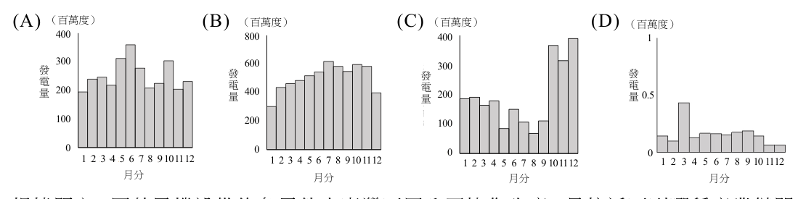
（A） 宜蘭縣（B） 花蓮縣（C） 彰化縣（D） 屏東縣答案：（C）
詳解與考點 正解：題組明示狹管效應發生在風灌入狹窄海域、通風斷面積縮小而風速加快的情況。彰化沿海面向臺灣海峽，最能對應臺灣與中國大陸之間的狹長海域條件；（C）彰化縣因此具有較佳的題設風力發電自然條件，故選 C。
A、B：宜蘭縣與花蓮縣主要面向開闊的太平洋，較不具題組所指由狹窄海域匯聚並加速風力的條件。
D：屏東縣位於臺灣南端，鄰近海域較為開展；即使可能有風場，也不是由題組所述臺灣海峽狹管效應推得的最佳位置。
本題考點：狹管效應（funneling effect）——風流通過較窄的通道時，應比較通道形狀與風速是否可能加快；風力發電區位（wind power siting）——依題設判斷風場時，先把物理條件對回實際海峽、山口或其他狹窄地形。
第 22 題
以風力發電的特色判斷,下列哪幅圖最可能是臺灣全年風力發電量分布圖?
（A） (百萬度)（B） (百萬度)（C） (百萬度)（D） (百萬度)
400400 800800 400400 1
300300 600600 300300
發 發 發 發
電 200200 電 400400 電 200200 電 0.5
量 量 量 量 發電量(百萬度) 100100 發電量(百萬度) 200200 發電量(百萬度) 100100
00 00 00 0 11 22 33 44 55 66 77 88 99 1010111211 12 11 22 33 44 55 66 77 88 99 1010111211 12 1 2 3 4 5 6 7 8 9 10 1112 11 22 33 44 55 66 77 88 99 1010111211 12
月分月份 月分月份 月份月分月份 月分答案：（C）
詳解與考點 正解：關鍵在臺灣風力發電量受季風強弱控制，而非日照或氣溫。冬半年東北季風較強，風力發電量應較高；夏半年季風轉弱，發電量則較低。（C）呈現冬季高、夏季低的年度分布，最符合這項季節性，故選 C。
A：若把高峰放在夏半年，會把風力發電誤當成受夏季高溫或日照帶動的能源型態。
B：全年近乎均勻的曲線忽略臺灣季風風速的明顯年內差異，無法反映冬強夏弱。
D：若出現與冬季強風相反的配列，或只在單一非冬月突升，都不符合季風主導的整體趨勢。
本題考點：季風（monsoon）——臺灣冬半年東北季風強、夏半年風況相對弱，是判讀風能年分布的主軸；風力發電（wind power）——發電量主要隨風速與風況變化，不能套用太陽能的季節判準。
第 23 題
根據題文,國外風機設備的各零件由臺灣不同公司協作生產,最接近下列哪種產業鏈關
係?
（A） 水平分工（B） 垂直分工（C） 水平整合（D） 垂直整合答案：（A）
詳解與考點 正解：題文的判準是同一設備製造階段中，不同公司各自專業生產塔架、電力纜線等零組件，再共同供應風機系統商。這是企業在相近製造層級分擔不同零件工作的（A）水平分工，故選 A。
B：垂直分工著重上游原料、中游加工、下游銷售或服務等前後階段的串接；本題問的是設備零組件由多家公司協作生產，不是整條產業鏈的階段關係。這是最容易因題文同時提到上中下游而混淆的選項。
C：水平整合是同一產業層級的企業透過合併、收購或共同控制擴大規模；題文只說協作生產，沒有所有權整合。
D：垂直整合是企業把供應鏈前後階段納入同一控制體系；不同公司分別製造零件恰與此特徵相反。
本題考點：水平分工（horizontal division of labor）——同層級企業各自專業化生產不同零組件時使用；垂直分工（vertical division of labor）——比較的是供應鏈前後階段，不要因同時出現多家企業就誤判；產業整合（industrial integration）——須有合併或控制關係，單純協作不算整合。
◎ 人口金字塔可辨識一地社會經濟發展程度,圖5 為2020 年四個國家的人口金字塔圖。
請問:
100+ 100+ 100+ 100+ 男(%) 男(%) 95-99 95-99 男(%) 95-99 男(%) 95-99
90-94 90-94 女(%) 90-94 女(%) 85-89 甲 女(%) 85-89 乙 85-89 丙 女(%) 90-9485-89 丁
80-84 80-84 80-84 80-84
75-79 75-79 75-79 75-79
70-74 70-74 70-74 70-74
65-69 65-69 65-69 65-69
60-64 60-64 60-64 60-64
55-59 55-59 55-59 55-59
50-54 50-54 50-54 50-54
45-49 45-49 45-49 45-49
40-44 40-44 40-44 40-44
35-39 35-39 35-39 35-39
30-34 30-34 30-34 30-34
25-29 25-29 25-29 25-29
20-24 20-24 20-24 20-24
15-19 15-19 15-19 15-19
10-14 10-14 10-14 10-14
5-9 5-9 5-9 5-9
0-4 0-4 0-4 0-4
8 7 6 5 4 3 2 1 0 1 2 3 4 5 6 7 8 8 7 6 5 4 3 2 1 0 1 2 3 4 5 6 7 8 8 7 6 5 4 3 2 1 0 1 2 3 4 5 6 7 8 8 7 6 5 4 3 2 1 0 1 2 3 4 5 6 7 8 圖5
第 24 題
圖5 中哪個國家最需要施行「長照服務」的政策?
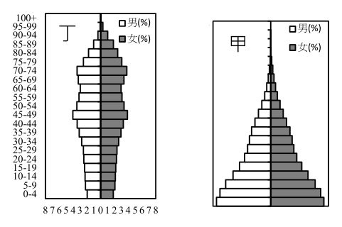
（A） 甲（B） 乙（C） 丙（D） 丁答案：（D）
詳解與考點 正解：長照服務的需求主要看高齡人口占比與高齡者規模，而非只看總人口。四個人口金字塔中，（D）丁呈現高年齡層較寬、幼年層較窄的人口老化型態，代表需要照護的高齡者相對較多，因此最需要長照服務，故選 D。
A：甲的底部較寬，反映幼年人口比重高；政策壓力較偏向育兒、教育與扶幼，而非長照。
B：乙未呈現丁所具有的明顯高齡人口比重，不能因人口金字塔上端存在就判為長照需求最高。
C：丙的年齡結構仍不如丁集中於高年齡層，長照資源的相對需求較低。
本題考點：人口金字塔（population pyramid）——上端較寬、底部較窄時，優先判為少子高齡的人口結構；長期照顧（long-term care）——以高齡人口的相對規模與失能照護需求判斷，不以總人口多寡取代年齡結構。
第 25 題
圖5 中哪個國家的人口扶幼比最高?
（A） 甲（B） 乙（C） 丙（D） 丁答案：（A）
詳解與考點 正解：人口扶幼比是 0–14 歲人口除以 15–64 歲人口，再乘以 100；要比較的是幼年人口相對於工作年齡人口的負擔，而不是單看 0–14 歲的絕對人數。（A）甲的金字塔底部最寬，幼年人口相對工作年齡人口的比例最高，因此扶幼比最高，故選 A。
B：乙的幼年層相對工作年齡層沒有甲寬，分子相對較小，扶幼比不會最高。
C：丙的底部較收窄，反映出生人口相對少；即使其他年齡層不同，也不符合扶幼比最高。
D：丁的主要特徵是高齡人口比重較高，應優先聯想到扶老比與長照需求，不能把它誤作扶幼比高。
本題考點：人口扶幼比（youth dependency ratio）——用 0–14 歲／15–64 歲 × 100 比較幼年扶養負擔；人口金字塔判讀（population-pyramid interpretation）——底部寬窄反映幼年人口相對規模，上端寬窄則較關聯老年人口。
◎ 2020 年新加坡政府核准某美國食品製造公司在該國製造、販賣實驗室製造的人造雞肉, 人造肉意指肉品製程不需屠宰動物,而是提取動物身體的細胞在實驗室約14 天培育的 產品,比傳統雞隻至少需45 天的飼養,迅速許多。另外,某新加坡食品科技新創公司 經過數年的研發後,在2021 年開始生產替代性蛋白質的產品,供應該國國內的蛋白質 需求。這些現象顯示新加坡近年於食品科技的突破。請問:
第 26 題
根據題文,人造雞肉的出現最可能造成什麼改變?
（A） 提高食品安全（B） 縮短食物里程（C） 降低糧食自給率（D） 減少基因改造食品答案：（B）
詳解與考點 正解：材料指出人造雞肉在新加坡製造並供當地市場販售，生產地與消費地更接近。這會減少食物從遠方產地運到消費者的運輸距離，因此（B）縮短食物里程最能由題文推出，故選 B。
A：實驗室製造不必然保證食品安全，仍取決於製程、檢驗與管理；題文沒有提供可直接判定安全性提高的依據。
C：在國內增加蛋白質供應來源，方向上是降低對外部供應的依賴，而不是降低糧食自給率。
D：不屠宰動物與是否使用基因改造技術是不同問題，題文沒有說人造雞肉會減少基因改造食品。
本題考點：食物里程（food miles）——比較食物生產地與消費地的距離，在地生產供在地消費通常可縮短運輸路徑；糧食自給與食品安全——增加國內供應不等於自動提升安全，兩者應分別依供應來源與管理證據判斷。
第 27 題
文中該國食品科技新創公司生產的替代性蛋白質產品可能會造成哪些影響?
甲、促進知識經濟 乙、提高糧食安全 丙、提高人口紅利 丁、降低環境負載力
（A） 甲乙（B） 甲丁（C） 乙丙（D） 丙丁答案：（A）
詳解與考點 正解：判準是替代性蛋白質由食品科技新創公司研發並供應國內需求，牽涉研發與技術應用，也能增加本地蛋白質來源。甲的促進知識經濟與乙的提高糧食安全都成立，所以（A）甲乙符合題意，故選 A。
B：甲成立，但丁的「降低環境負載力」不成立。替代蛋白質即使可能降低環境負荷，環境負載力指的是環境可承受壓力的能力，不能把降低負荷誤寫成降低承受能力。
C：乙成立，但丙的人口紅利取決於勞動年齡人口占比等人口結構，與食品科技產品的生產沒有直接關係。
D：丙與丁皆不符合題意；前者把技術創新誤當人口結構改變，後者混淆環境負荷與環境負載力。
本題考點：知識經濟（knowledge economy）——研發密集、以技術與創新創造價值的產業，可由其研發活動判斷；糧食安全（food security）——供應來源增加或分散時，從可取得性與供應穩定性判斷是否提升；環境負荷與環境負載力——減少對環境施加的壓力不等於降低環境承受壓力的能力。
◎ 卡帕多奇亞(38.6°N, 34.8°E)位於亞洲西部的安那托利亞高原上,地表布滿火山熔岩與 火山灰,岩層受侵蝕後形成奇岩怪石,植被稀少、
渺無人煙。圖6 為卡帕多奇亞某處的奇岩怪石景
觀,呈現不同性質岩層蝕餘之情形。請問:
第 28 題
圖6 中形成奇岩怪石的地形作用力,與下列何種
地形最為相似?
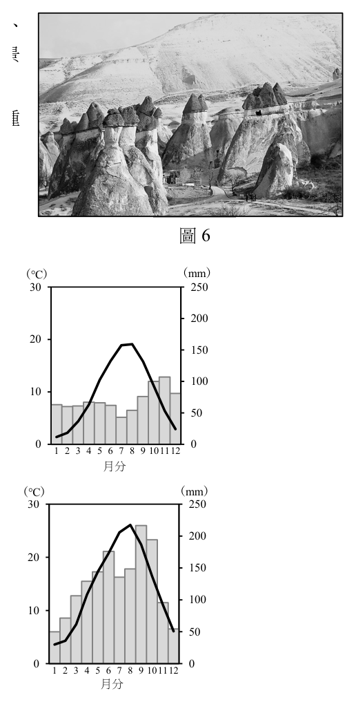
（A） 錐丘（B） 石筍（C） 角峰（D） 蕈狀岩
圖6答案：（D）
詳解與考點 正解：題組指出火山熔岩與火山灰構成的不同岩層受侵蝕後留下奇岩怪石，關鍵是抗蝕力不同造成的差異侵蝕。蕈狀岩也常因較堅硬的上層保護較軟的下層，或上、下部受風蝕強弱不同而形成岩柱與岩帽，形成作用最相似，故選 D。
A：錐丘是火山噴發時火山灰、火山礫等碎屑堆積而成，重點是火山物質的堆積，不是後續侵蝕留下的殘留地形。
B：石筍由含碳酸鈣的地下水在洞穴內滴水沉積形成，屬化學沉澱地形，和地表岩層被削蝕的作用不同。
C：角峰是冰河從多側侵蝕山體後形成的尖峭山峰，主要判準是冰蝕，不是乾燥地區常見的岩性差異侵蝕。
本題考點：差異侵蝕（differential erosion）——同一地區的岩層抗蝕力不同時，較硬者保留、較軟者凹蝕，易形成奇岩怪石；風蝕地形（aeolian landform）——在乾燥少植被地區，風對裸露岩體的侵蝕更容易塑造特殊外形；地形作用判讀（geomorphic process）——先分辨是堆積、溶蝕、冰蝕或風蝕，再比對選項。
第 29 題
下列何者最可能是卡帕多奇亞的氣候圖?
（A） (°C) (mm)（B） (°C) (mm)
30 250 30 250
200 200
20 20 150 150
100 100 10 10
50 50
0 0 0 0 1 2 3 4 5 6 7 8 9 101112 1 2 3 4 5 6 7 8 9 101112
月分 月分（C） (°C) (mm)（D） (°C) (mm)
30 250 30 250
200 200
20 20
150 150
100 100
10 10
50 50
0 0 0 0 1 2 3 4 5 6 7 8 9 101112 1 2 3 4 5 6 7 8 9 101112
月分 月分答案：（B）
詳解與考點 正解：卡帕多奇亞位於38.6°N的安那托利亞內陸高原，且題組明示植被稀少；判準要同時滿足中緯度內陸的冬季偏冷、夏季較暖，以及夏季偏乾的降水季節性。選項 B 符合這組氣候特徵，故選 B。
A：只以緯度相近判斷不足；內陸高原的年溫差與降水季節分配，不能用沿海型氣候圖替代。
C：卡帕多奇亞的乾燥與夏季少雨是重要線索；未同時呈現這項季節性，便不能解釋題組所述稀少植被。
D：高原位置使冬季氣溫明顯受海拔與內陸性影響，不能把該地判成全年高溫或全年濕潤的型態。
本題考點：氣候圖判讀（climograph interpretation）——要一起看氣溫年較差與降水的季節分配，不能只看緯度；內陸性（continentality）——距海遠的地區通常年溫差較大；地中海周邊高原氣候（Mediterranean interior climate）——夏季偏乾、冬季較有降水，但高原冬季可偏冷。
第 30 題
今日當地所處的文化圈中,最可能看到下列何種景象?
（A） 信奉耶和華（B） 禁食所有肉類（C） 焚香跪拜誦經（D） 每日需數次禮拜答案：（D）
詳解與考點 正解：卡帕多奇亞在今日土耳其境內，所屬文化圈以伊斯蘭教為主；穆斯林每日按固定時段禮拜是最直接的生活景象，因此選項（D）每日需數次禮拜符合題意，故選 D。
A：耶和華可見於猶太教與基督宗教的信仰語境，但不是判斷土耳其當代主流宗教實踐的特徵。
B：禁食所有肉類不是伊斯蘭教的一般規範；伊斯蘭飲食禁忌的判準在於特定食物與處理方式。
C：焚香、跪拜、誦經較常用來描述東亞佛教等宗教儀式，與伊斯蘭教的禮拜形式不同。
本題考點：文化圈（cultural realm）——判讀地區文化時，可由主流宗教及其日常儀式辨識；伊斯蘭教（Islam）——五時禮拜是其重要宗教實踐；宗教景觀（religious landscape）——飲食、禮拜與祭祀形式都能反映文化差異。
◎ 圖7 為2021 年某地區的衛星影像圖。某研究發現:「該圖中的深色林地上布滿灰白色 的焚林火點,判斷該地原住民族傳統維生
方式以適應當地自然環境的狩獵、採集、
燒墾農業為主」,該地的燒墾時機主要在
乾季後期。請問:
20°N200N
第 31 題
題文中的傳統燒墾農業,從全球尺度的氣
候類型判斷,最可能發生在哪個氣候區?
15°N
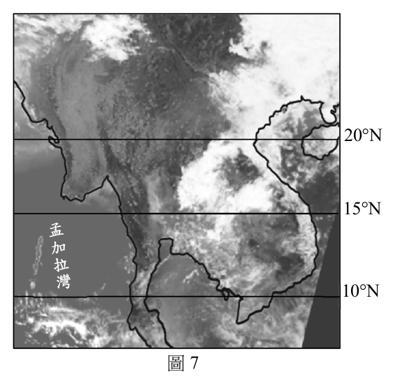
（A） 副極地氣候（B） 熱帶乾燥氣候（C） 溫帶濕潤氣候（D） 熱帶莽原氣候答案：（D）
詳解與考點 正解：題組的關鍵是原住民族以狩獵、採集與燒墾農業維生，並在乾季後期焚林。這種農業需要明顯的乾、濕季交替：乾季末便於燃燒，雨季到來後可利用灰燼養分耕作，最符合熱帶莽原氣候，故選 D。
A：副極地氣候冬季漫長嚴寒、生長季短，不利於以熱帶林地為基礎的輪耕燒墾。
B：熱帶乾燥氣候降水過少，難以維持題組所示的深色林地與燒墾後的農作循環。
C：溫帶濕潤氣候雖可農耕，但乾季不鮮明，不能由「乾季後期」這個燒墾時機直接判定。
本題考點：熱帶莽原氣候（tropical savanna climate）——全年高溫且乾、濕季分明，乾季末常見火災或燒墾；燒墾農業（shifting cultivation）——利用焚燒後短期養分耕作，須配合降水季節；人地互動（human-environment interaction）——維生方式要連同植被、雨季與土地休耕週期一起判讀。
第 32 題
圖7 最可能在哪個時期拍攝?
10°N100N
（A） 12-1月（B） 3-4月（C） 6-7月（D） 9-10月
圖7答案：（B）
詳解與考點 正解：圖示地點約在15°N，屬北半球熱帶莽原帶；題組又明示燒墾發生在乾季後期。該緯度的乾季末通常落在北半球春季、雨季北移之前，因此最可能在3-4月拍攝，故選 B。
A：12-1月多為乾季前、中段，尚未最能對應題組所說的乾季後期。
C：6-7月隨熱帶輻合帶北移，雨季已在多數15°N地區展開，和集中焚林的時機不符。
D：9-10月多接近或進入雨季尾聲，林地濕潤度提高，不是題組指定的主要燒墾時段。
本題考點：熱帶輻合帶（Intertropical Convergence Zone, ITCZ）——隨季節南北移動，帶動熱帶地區雨季的位置；乾濕季（wet and dry seasons）——燒墾時機常選在乾季末，方便燃燒並銜接雨季播種；緯度判讀（latitude-based seasonality）——同為熱帶地區，南北半球的乾濕季月份相反。
◎ 根據媒體報導,2018 年的中美貿易戰與2020 年開始的新冠肺炎疫情影響全球企業運 作,衝擊既有的產業分工與全球供應鏈,導致全球經濟活動趨緩。部分核心國家的企業 開始將生產基地遷回本國。基於國家安全考量,美國政府開始制訂半導體產業在地化生 產的相關措施,並與英特爾、三星電子與台積電等企業討論設廠事宜。當時台積電北美 市場客戶的比率約為60%,故於2020 年5 月宣布將在美國亞利桑納州投資120 億美 金,興建5 奈米製程的先進晶圓廠,預計創造許多工作機會。請問:
第 33 題
根據題文,美國半導體產業實行在地化生產相關措施的現象,與下列哪個概念最接近?
（A） 產業分工（B） 聚集經濟（C） 產業連鎖（D） 區位移轉答案：（D）
詳解與考點 正解：題組描述全球供應鏈受衝擊後，美國以國家安全為由推動半導體在地生產，企業也計畫在美國設廠。重點是生產據點由原有的全球配置改到本國，因此（D）區位移轉最接近此現象，故選 D。
A：產業分工是不同地區或企業分別承擔不同生產環節；題組提到供應鏈受衝擊的背景，但所問的現象是工廠所在地改變。
B：聚集經濟強調相關企業集中後共享勞動力、資訊或服務的利益，不能單從一國要求設廠就判定為聚集經濟。
C：產業連鎖描述上、中、下游產業之間的關聯，題組中的關鍵變化不是環節關係，而是半導體生產地點的遷移。
本題考點：區位移轉（industrial relocation）——企業將生產據點由一地遷往另一地時，從工廠或產能的地理位置變化判斷；全球供應鏈（global supply chain）——供應鏈受政治、疫情或安全因素影響時，可能促使企業重新配置生產區位。
第 34 題
根據題文,請提出當時台積電在美國設廠時主要考量的兩個工業區位要素,並從文中各
抄錄一段對應文字為佐證。(各2 分)【佐證文字為兩個標點符號之間,且區位要素與
佐證文字正確對應才給分】
區位要素 佐證文字
標準答案未收錄
詳解與考點 正解：可填兩項區位要素及佐證如下。市場： 「台積電北美市場客戶的比率約為60%」；政府政策： 「基於國家安全考量，美國政府開始制訂半導體產業在地化生產的相關措施」。前者說明接近主要客戶的市場考量，後者說明政府以在地化措施影響設廠決策，故填市場、政府政策。
本題考點：市場區位（market orientation）——客戶集中或需求量大的地區，會提高企業就近生產的誘因；政府政策（government policy）——補助、在地化或國安措施能改變企業設廠的成本與風險；文本證據（textual evidence）——申論題要把區位概念與題組文字中可直接支持它的句子一一配對。
◎ 由於全球供應鏈重整,臺灣面臨產業結構調整之挑戰,政府積極推動新南向政策。這幾 年南亞及東南亞經濟發展與轉型快速,紐澳漸從孤立走向樞紐的地位,政府企圖導引國 內企業與南向國家建立更緊密的經濟交流。請問:
第 35 題
下列哪些因素可能是促進南亞或東南亞國家經濟發展的重要因素?請於答題卷上擇一
區域勾選並寫出相對應的因素代號。(2 分)【全對才給分】
甲、英語溝通之科技人才資源豐沛 乙、以單一宗教信仰為主凝聚力強
丙、砍伐熱帶雨林轉作熱帶栽培業 丁、境內人口紅利較已開發國家大
區域(請擇一勾選) 經濟發展的重要因素(請填二個代號)
□南亞
□東南亞
標準答案未收錄
詳解與考點 正解：題目要求擇一區域時，可勾選南亞並填甲、丁。南亞以印度為代表，英語溝通的科技人才有助於承接資訊與服務產業；人口年齡結構相對年輕，也可能形成較已開發國家大的勞動與消費人口紅利，故填南亞：甲、丁。
乙：南亞內部宗教多元，不能把「單一宗教信仰為主」當成其共同且主要的經濟發展條件。
丙：砍伐雨林轉為熱帶栽培可能帶來短期產出，但不等於可持續的發展條件，也不是南亞整體最具代表性的優勢。
本題考點：人力資本（human capital）——語言能力與技術人才可提升服務業及知識產業的承接能力；人口紅利（demographic dividend）——工作年齡人口比重較高時，須配合就業與教育才可能轉成成長動力；區域差異（regional differentiation）——南亞、東南亞各國差異大，判讀時要避免把單一國家的特徵套到整個區域。
第 36 題
臺灣若加入下列哪個國際組織,最有助於與紐澳國家間的經濟合作關係?
（A） WHO（B） OPEC（C） CPTPP（D） UNFCCC答案：（C）
詳解與考點 正解：若要加強臺灣與紐西蘭、澳洲的經濟合作，應選擇以貿易、投資與區域經濟規則為核心，且紐澳均參與的組織。（C）CPTPP符合這些條件，最能提供制度化的經濟合作架構，故選 C。
A：WHO是世界衛生組織，處理全球公共衛生事務，不是區域經濟合作機制。
B：OPEC是石油輸出國組織，核心議題是石油生產與市場協調，紐澳經濟合作並非由此架構推動。
D：UNFCCC是聯合國氣候變化綱要公約，著重氣候治理與減碳協商，不能直接作為貿易與投資合作的主要平台。
本題考點：區域經濟整合（regional economic integration）——題幹問貿易、投資或經濟合作時，先找成員重疊且具有經貿規則的組織；國際組織功能——以衛生、能源、氣候或經貿的主管議題區分名稱相近但功能不同的國際組織。
◎ 荷蘭從2020 年1 月起,正名為「尼德蘭」(Nederland),為低地之意,其國土約50% 低於海拔1 公尺。16 世紀以來,荷蘭人利用風車及堤防排乾積水製造圩田,然而許多 歷史上嚴重的洪災多和「與海爭地」關係密切。21 世紀以來,政府轉換思維展開國土 保育,啟動「還地於河」計畫,在該計畫的空間規畫過程中,荷蘭政府透過各種溝通管 道與場合,藉由公眾參與式地理資訊系統,利用圖像化工具,推估不同情境方案可能的 結果與影響,提供對話討論的機會。政府藉此了解民眾需求,民眾掌握專業設計規畫理 念,設計單位整合政府與民眾意見作為設計依據,據此整合各方意見,建立共識。請問:
第 37 題
尼德蘭的國土治理從「與海爭地」轉變為「還地於河」,最適合以下列哪個概念解釋?
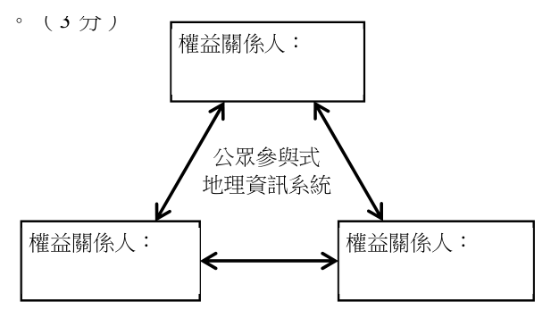
（A） 碳足跡（B） 全球暖化（C） 環境保育（D） 土地退化答案：（C）
詳解與考點 正解：從「與海爭地」造成洪災風險，改為「還地於河」讓河川有較大調適空間，可看出治理目標轉向維護水域與土地系統、降低人為開發造成的風險。（C）環境保育最能解釋這種國土治理思維的轉變，故選 C。
A：碳足跡是衡量活動造成溫室氣體排放量的指標，題組沒有以排放量作為政策轉向的判準。
B：全球暖化可能加劇某些水文風險，但題組著重的是土地與河川空間如何調整，不能以較廣泛的氣候現象取代其治理概念。
D：土地退化指土壤、植被或土地生產力的劣化；本題不是描述土地品質下降，而是重新分配河川與人類使用土地的空間。
本題考點：環境保育（environmental conservation）——當政策從擴張開發轉為保留或回復自然系統的空間時，從治理目標判斷其保育性；河川治理（river management）——面對洪災風險時，給河川調適空間是調整人地關係的作法。
第 38 題
根據題文,請在答題卷上寫出「還地於河」公眾參與式地理資訊系統過程中的各權益關
係人以完成示意圖。(3 分)
權益關係人:
公眾參與式
地理資訊系統
權益關係人: 權益關係人:
本題選項為上圖中的 A／B／C／D，請對照圖片作答。
標準答案未收錄
詳解與考點 正解：題組已交代三方的資訊流動：政府藉系統了解民眾需求，民眾藉系統掌握專業設計理念，設計單位整合政府與民眾意見作為設計依據。因此示意圖中的三類權益關係人應填政府、民眾、設計單位。
本題考點：公眾參與式地理資訊系統（public participation GIS, PPGIS）——以地圖與空間資料讓非專業者也能參與規畫討論；權益關係人（stakeholder）——凡受政策影響、能提供需求或負責執行設計的一方，都應納入；協作規畫（collaborative planning）——政府、民眾與專業者的意見要經整合後形成共識。
第 39 題
根據題文,下列何者是公眾參與式地理資訊系統賦權概念的實踐?
（A） 整合各方意見,建立共識（B） 政府轉換思維展開國土保育,啟動「還地於河」計畫（C） 政府藉此了解民眾需求,民眾掌握專業設計規畫理念（D） 利用圖像化工具,推估不同情境方案可能的結果與影響答案：（C）
詳解與考點 正解：題組所稱公眾參與式地理資訊系統的賦權，不只讓民眾表達意見，也讓民眾取得理解規畫的資訊與能力，同時使政府取得在地需求。（C）政府了解民眾需求、民眾掌握專業設計規畫理念，正呈現資訊與能力雙向流動的賦權實踐，故選 C。
A：整合各方意見、建立共識是參與後可能形成的結果，但本身未直接說明民眾如何獲得理解與參與能力。
B：政府啟動「還地於河」計畫是政策方向與行政決定，不能單獨代表公眾因地理資訊而獲得賦權。
D：利用圖像化工具推估情境結果是地理資訊系統的技術功能，若沒有呈現公眾取得、理解並使用資訊的過程，尚不足以判為賦權。
本題考點：公眾參與式地理資訊系統（public participation GIS, PPGIS）——判斷賦權時，找出公眾是否能取得空間資訊、理解議題並影響討論；賦權（empowerment）——技術工具本身不是終點，關鍵在是否提升原本較缺乏專業資源者的知情與參與能力。
◎ 某生從政府資料開放平台下載某地區超商登記資料,發現此資料中,包含全聯及其他超 商(如:7-11、全家)。但根據他的觀察,全聯所販售的商品比起其他超商商品種類較 為多樣,因此他想從商品圈的大小來探討將全聯與其他超商歸於同一類別的合理性。該 生隨機抽樣全聯與其他超商的顧客各100 名,調查其來店花費的路程時間,計算平均數 後轉換成實際距離並以GIS 進行分析,得到如圖8 及圖9 的商品圈分布圖。請問: 全聯 其他超商
商品圈 商品圈
道路 道路
圖8 圖9
第 40 題
該生的研究發問,最可能是地理學中的哪項理論所探討的議題?
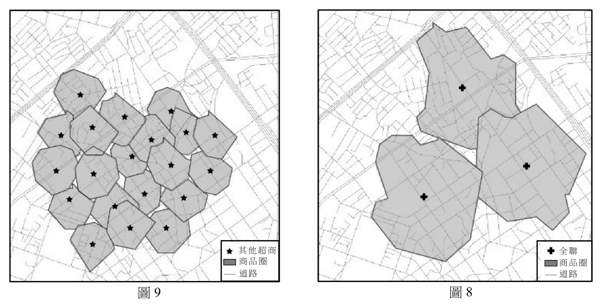
（A） 中地理論（B） 人口移動理論（C） 核心邊陲理論（D） 工業區位理論答案：（A）
詳解與考點 正解：題組比較全聯與其他超商的商品種類及顧客可接受的來店距離，核心是商品圈大小。中地理論正是用商品的服務範圍、消費者願意前往的距離與供給機能來解釋聚落服務區，因此選項（A）中地理論最符合，故選 A。
B：人口移動理論討論人口遷移的推拉因素、流向與結果，不用來解釋同一地區商店的商品圈。
C：核心邊陲理論說明不同區域間資本、資源與權力的不均衡，尺度比本題的零售服務範圍大得多。
D：工業區位理論重在工廠選址的原料、運輸、勞力與市場成本，不能直接說明零售據點的顧客行程。
本題考點：中地理論（central place theory）——商品與服務的等級不同，通常對應不同大小的服務範圍；商品圈（market area）——消費者實際願意到店的空間範圍；服務機能（service function）——商品種類較多的商店可能服務較大的腹地。
第 41 題
圖8 及圖9 的分析結果,最可能是運用GIS 哪種分析功能?
（A） 環域分析（B） 疊圖分析（C） 路網分析（D） 視域分析答案：（C）
詳解與考點 正解：研究先調查顧客來店花費的路程時間，再換算為沿道路網可到達的實際距離來畫商品圈；分析的對象是道路連通與行程成本，屬於路網分析，故選 C。
A：環域分析是在點、線或面周圍依固定直線距離建立範圍，不能充分表現道路繞行與不同路段的可達性。
B：疊圖分析是把多個空間圖層重合以找交集、差異或關係，題組的關鍵不是圖層交疊，而是路徑距離。
D：視域分析用於判斷地形或建物遮蔽下哪些地點互相可見，和顧客行車或步行時間無關。
本題考點：路網分析（network analysis）——沿道路或其他網絡計算最短路徑、時間與服務範圍；可達性（accessibility）——同樣的直線距離在不同道路條件下，實際到達成本可能不同；GIS功能選擇（GIS analysis selection）——要先辨認資料關係是距離、路徑、疊合還是視線。
第 42 題
根據研究成果,該生在探究與實作的課堂上提出兩點研究結論,第一、全聯的商品圈範
圍大於其他超商,因此是否應歸為同一類仍有待商榷。第二、若圖9 中其他超商的數量
維持不變,但均增加其商品販售的種類,將會擴大在該地的商品圈範圍。老師審視圖9
的分析結果後,認為第二點結論並不合理。請根據圖9 各商店商品圈範圍的現況,以30
字內敘述老師所持的可能理由。(3 分)
根 據 圖 9
本題選項為上圖中的 A／B／C／D，請對照圖片作答。
標準答案未收錄
詳解與考點 正解：可在30字內作答「各超商商品圈已相互重疊，無可擴張空間。」圖9的現況顯示各店服務範圍彼此競合；在店數與位置不變時，增加商品種類未必能把外緣向外推進，較可能只是重新分配既有商品圈內的顧客，故此結論不合理。
本題考點：商品圈重疊（market-area overlap）——相鄰服務範圍已覆蓋同一地區時，新增機能未必擴大整體外緣；空間競爭（spatial competition）——店數與位置不變時，需求可能在店家間轉移而非產生新腹地；因果推論（causal inference）——觀察到商品種類與商品圈相關，不足以單獨推出增加種類必然擴張範圍。
◎ 克利伯環球帆船賽事,總賽程超過4 萬海里,耗時近1 年,是全球規模最大的業餘帆船 賽事。該賽事的某些賽段會經過無風帶,受困在無風帶的帆船,常會像黏在水上一樣紋 絲不動,若能有4 海里的航速已經算是很好的情況,因此,對選手而言,穿越無風帶是 帆船賽中最難熬的難關。圖10 為2019-2020 年克利伯環球帆船賽甲到辛的八個賽段, 圖中甲賽段從(1)到(2),餘此類推。請問:
圖10
第 43 題
從全球自然植被的分布而言,甲至丁中哪個賽段出發時可看到港市外圍的山坡上有低
矮灌木林的分布,抵達目的地前沿著海岸邊可見到密布在港市外圍的常綠森林景觀?
(2 分)
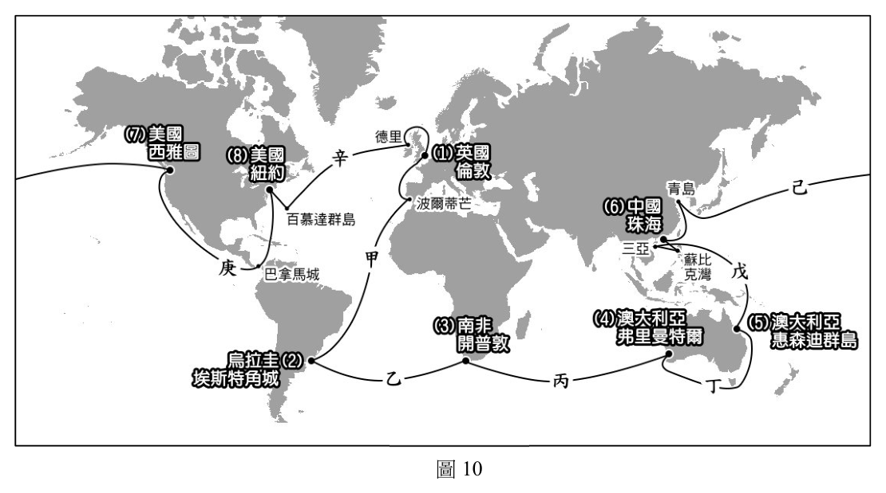
本題選項為上圖中的 A／B／C／D，請對照圖片作答。
標準答案未收錄
詳解與考點 正解：判準是起點要落在以低矮硬葉灌木為代表的地中海型植被帶，終點則要進入沿海常綠森林較密布的地帶。依圖10各航段的起訖位置，只有丁依序符合這兩種景觀，故填丁。
甲：甲的起訖位置不能同時對應題目指定的灌木林起點與常綠森林終點。
乙：乙雖跨越海洋，但其兩端的自然植被組合不符合題目所給的先後順序。
丙：丙的出發地或目的地至少有一端不在指定植被帶，不能由航線長短代替植被判讀。
本題考點：自然植被（natural vegetation）——植被型態要由氣候的溫度與降水條件推估；地中海型植被（Mediterranean vegetation）——冬雨夏乾區常見耐旱的硬葉灌木；常綠森林（evergreen forest）——濕潤且生長季較長的沿海地區較易形成。
第 44 題
請在答題卷上勾選出一個會經過兩次以上無風帶的賽段(2 分),及寫出對應的無風帶
名稱(4 分)。
賽段(請擇一勾選) 賽段會經過的無風帶名稱
□戊
□己
_____________________、_____________________
□庚
□辛
本題選項為上圖中的 A／B／C／D，請對照圖片作答。
標準答案未收錄
詳解與考點 正解：判斷無風帶要看航線是否跨越副熱帶高壓帶與赤道輻合帶，而非只看出發、抵達港口的名稱。圖10中的戊同時經過副熱帶無風帶與赤道無風帶，符合「兩次以上」的條件，故勾選戊，填副熱帶無風帶、赤道無風帶。
己：己未同時跨越題目要求的兩種弱風帶，不能因位於熱帶附近就一概判為多次通過無風帶。
庚：庚的緯向移動範圍不足以依序通過兩個以上指定的無風帶。
辛：辛雖可能接近其中一個副熱帶弱風區，但不具同時通過赤道無風帶的條件。
本題考點：副熱帶無風帶（horse latitudes）——約在南北緯30°附近，受副熱帶高壓下沉氣流影響，風力較弱；赤道無風帶（doldrums）——赤道附近輻合上升，近地面風向多變且風速偏弱；航線緯度判讀（route latitude analysis）——把起訖地與航線跨越的緯線逐段比對，才能計數。
第 45 題
2022 年3 月28 日某報導指出:「俄羅斯軍隊控制蘇梅城後,一路往位於300 公里外,
方位角260∘的烏克蘭首都基輔挺進。」某生為了解該地戰情進行地圖繪製,圖11 為該
生依據此報導所繪之地圖,但闕漏重要的地圖要素。為使此地圖能被正確判讀,請於答
題卷作答區地圖的指北針箭頭處,以「北」字標示正確方位(2 分);並於比例尺的方
框處填入此圖正確的比例尺數值。(2 分)
白俄羅斯
基輔
0
公里
俄羅斯
烏克蘭
蘇梅
俄羅斯優勢區
圖11
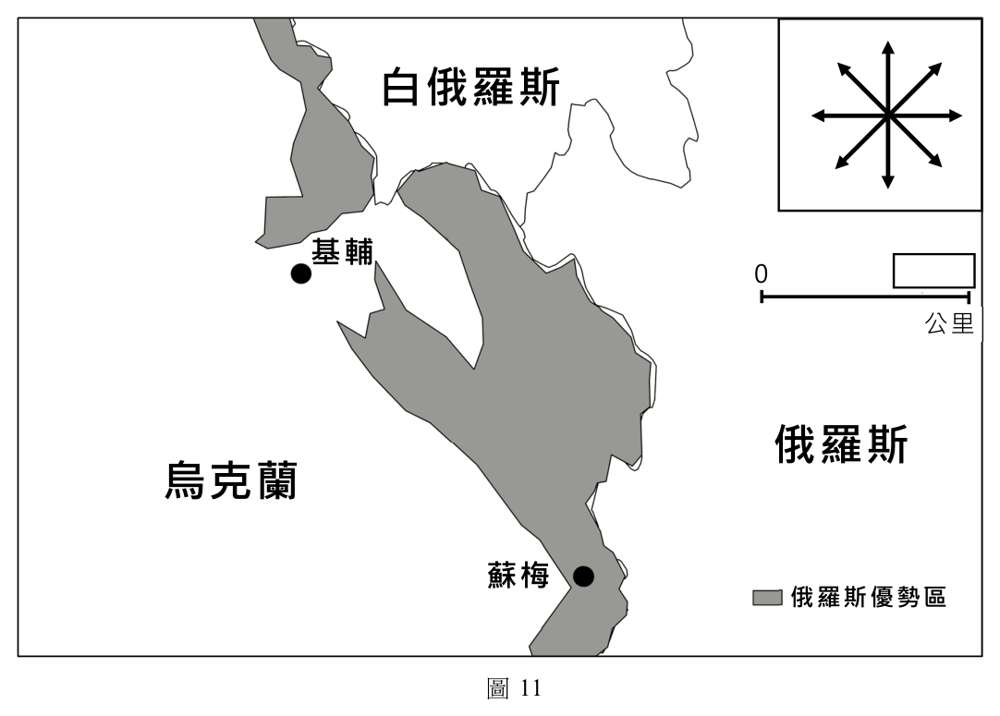
本題選項為上圖中的 A／B／C／D，請對照圖片作答。
標準答案未收錄
詳解與考點 正解：由蘇梅指向基輔的方位角是260°，表示從正北順時針轉260°，方向為略偏南的西方。把圖上的蘇梅至基輔連線對準此方向，可知「北」應標在指北針的右上端。再以兩地實距300公里對照圖上距離，該距離為比例尺刻度長的3倍，所以比例尺方框填100公里，故填北在右上方、100公里。
本題考點：方位角（azimuth bearing）——由正北起順時針量0°-360°，260°接近西方且略偏南；地圖定向（map orientation）——先用已知兩地的真實方位校正北向，再閱讀其他方向；線比例尺（linear scale）——以同一圖上的距離比對已知實距，按倍數換算刻度值。
其他年度
回到分科測驗地理的年度總覽 ，
或到分科測驗題庫首頁 看其他科目。
題目與標準答案出自大考中心 分科測驗歷年試題（依著作權法 §9，考試試題不受著作權保護）。依中華民國《著作權法》第 9 條第 1 項第 5 款，
依法令舉行之各類考試試題不得為著作權之標的，得自由利用。詳解為 AI 整理的學習輔助，
並非官方標準答案 ；中華民國會修訂，引用前請對照現行版本查證。